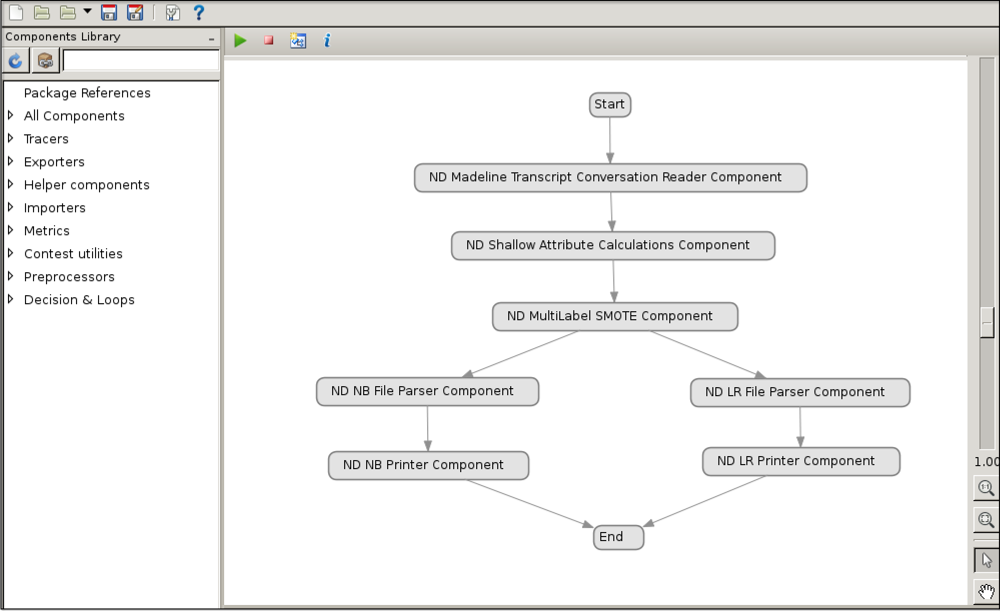
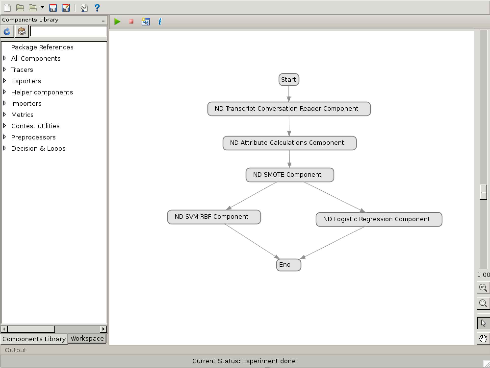

Tracelab: Software Traceability Instrumentation
Project Description. TraceLab is a research-based framework that is intended to facilitate innovation, creativity, and reproducability of research projects. It is used as an experimental environment to enable researchers to reproduce state-of-the-art approaches. Furthermore, they are designed to improve software traceability solutions across various software engineering tasks. Such approaches can also be supported through visual modeling environment using a library of reusable and user-defined set of components. Overall, TraceLab provides easy access to recent techniques so that other researchers can modify and improve. For the state-of-the-art to advance, it is essential that current techniques be reproducable.
 TraceLab Project-1. User stories are short descriptions of software features told from the user perspective. In general, a user story consists of a role, function, and rationale, which is expressed as: As a <role>, I want to <function> so that I can <rationale>. In the work published at ICSE'2017, we presented a technique that aims to generate user stories from the recorded transcripts of conversations between customers and developers. The input to this approach is a plain transcript of customer and developer conversations. The output to this approach is a list of 'speech turns' in the conversation that include role, function, and rationale data (a speech turn is a section of speech by one member of the conversation, during which others are quiet). The automatic generation of extractive summaries for user stories is a new research area, and working implementations are rare. This artifact is a set of reproducible TraceLab components that implement our technique. The benefit to using TraceLab components is that they are not only reusable but relatively easy to modify, so that future researchers can build improvements over our approach.
 TraceLab Project-2. 'Speech Acts' are generally expressed as verbal actions to achieve a specific task. A typical expression of speech act is the following example: I've just made some tea. As a result, the speech does more than stating a fact — it has a consequence. This example may imply to invite or to offer. In recent work published at FSE'2018, we presented a multi-label classification technique that aims at detecting speech act types from written question and/or answer conversations between programmers. In our approach, a 'virtual assistant' receives as an input a message, and outputs the same message classified into one of several categories. A virtual assistant is a system that emulates the answers that programmers would give in a conversation. Virtual assistants for software engineering have not yet scratched the base to construct models of programmer conversations, and working implementations of this kind are necessary to push forward the software engineering research community. We reproduce our technique by providing an artifact that consists of a set of TraceLab components. TraceLab components are beneficial for two reasons. These components are reusable and fairly easy to modify and the researchers can extend them for further improvements.